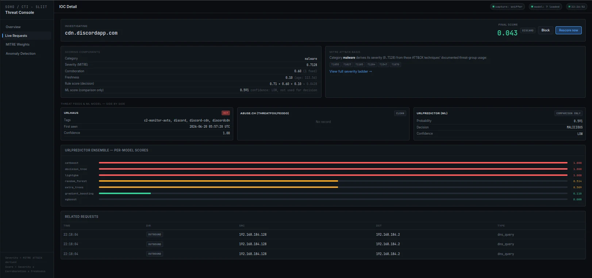

- M1
Threat Intelligence & Enforcement
CTI IOC scoring with ML fallback and guarded enforcement
Sakila Udana · IT22233912 · Group Leader
M1 turns public threat intelligence and locally captured network metadata into explainable risk scores. It captures DNS, TLS SNI and TCP-flag metadata, scores indicators with ATT&CK-derived severity, feed corroboration and freshness, and falls back to an ML ensemble only when no feed has a record. Blocks and unblocks are enforced through M4's API; M1 never writes iptables or hosts rules itself.
Research question
- Can MITRE ATT&CK be used to derive objective and reproducible severity weights for the threat categories in public feeds, and do they rank the categories plausibly?
- How effectively can a lightweight ensemble classify hostnames that no feed lists, using only lexical features, and is it reliable enough to act on automatically?
- Does the scoring and enforcement pipeline behave correctly and safely, never blocking local or safelisted addresses, and is it fast enough for a small network?
What it does
-
01
Metadata capture
Scapy captures DNS, TLS SNI and TCP SYN/SYN-ACK/FIN metadata, with direction labelling and a single write path.
-
02
CTI IOC scoring
URLhaus, ThreatFox and Feodo Tracker indicators get a severity derived from MITRE ATT&CK v19.1, combined with feed corroboration and freshness.
-
03
ML-ensemble fallback
A 7-model tree ensemble scores hostnames that no feed lists, using only features available at decision time.
-
04
Guarded enforcement
Local guards and a non-raising client send block and unblock requests to M4's API.
-
05
Anomaly integration
Windowed traffic features go to M2, and the returned anomaly score is shown on the CTI dashboard.
Pipeline
-
01
Capture
Scapy captures DNS, TLS SNI and TCP SYN/SYN-ACK/FIN metadata, or events arrive from authenticated agents.
-
02
Score
Each indicator gets an ATT&CK-derived severity, combined with feed corroboration and freshness.
-
03
Fallback
When no feed has a record, an ML ensemble scores the hostname.
-
04
Request
Block or unblock requests go to M4's API; features go to M2 for an anomaly score.

